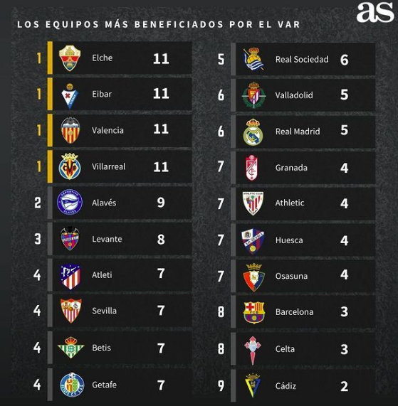

¿Qué es la Liga Santander?
La Liga Santander es la liga de mayor nivel de fútbol en España, en ella compiten los 20 mejores equipos, de los cuales los 3 que obtienen menos puntuación descienden a la categoría de segunda división, la Liga Smartbank. Los 4 equipos que obtienen mayor pubtuación se clasifican para jugar la Champions League, los que finalizan en 5º y 6º lugar son clasificados para la Europa League, mientras que el que finaliza como 7º se clasifica para jugar la UEFA Conference League. Todo esto puede variar dependiendo de el equipo que gane la Champions, Europa League, etc. en la temporada anterior. Los 3 que más puntuación obtienen en la Liga Smartbank ascienden a la primera división sustituyendo a los 3 equipos descendidos.
La Clasificación
La clasificación en la Liga Santander últimamente está muy interesante, ya que los 4 equipos de arriba están muy ajustados, ya que faltan 3 jornadas y la diferemcia de estos es de poquísimos puntos, como podemos observar en la imagen, por lo que hasta la última jornada nada está decidido aún.
Aquí podemos observar como ha finalizado la liga Santander, con Eibar, Huesca y Real Valladolid como descendidos a segunda; Atlético de Madrid (campeón), Real Madrid, FC Barcelona y Sevilla clasificados a Champions League; Real Sociedad y Real Betis irán a UEFA Europa League; Villarreal jugaría UEFA Conference League, pero al haberle ganado la final de la Europa League al Manchester United por 11-10 en penaltis se clasifica automáticamente para la Champions League 2021-22. El equipo revolución de esta temporada sin duda es el Cádiz CF, que recién ascendido ha finalizado en la 12ª posición ganándole como mínimo un partido a cada uno de los 3 equipos jamás descendidos de la Liga Santander.
Mientras que en las siguientes imagenes subidas por el Diario AS, uno de los diarios más importantes del país, con las que podemos ver que la Liga estaría muy diferente a como realmente está ahora mismo, claro ejemplo es el del Cádiz CF, un equipo recién ascendido que con la influencia del VAR ha conseguido 2 puntos de más y 11 puntos de menos, lo que les podría dejar facilmente en puestos de UEFA Europa League o de UEFA Conference League. (Todo esto ha sido calculado en la jornada 35, los últimos 9 puntos que se han jugado los 20 equipos no están incluídos en las siguientes imágenes)
En esta los más beneficiados:
Máximos goleadores
Los máximos goleadores de la Liga Santander son los siguientes:
1. Lionel Messi (Argentina) con 473 goles en 519 partidos.
2. Cristiano Ronaldo (Portugal) con 311 goles en 292 partidos.
3. Telmo Zarra (España) con 251 goles en 277 partidos.
4. Hugo Sánchez (México) con 234 goles en 347 partidos.
5. Raúl González (España) con 228 goles en 550 partidos.
Lo más destacable de este top es que Cristiano Ronaldo es el único que tiene más goles que partidos disputados, teniendo un promedio de 1'07 goles por partido.
Palmarés históricos
Los equipos con mayor palmarés histórico son los siguientes:
1. Real Madrid con 33 títulos de Campeón, 23 de Subcampeón y 10 de tercero.
2. FC Barcelona con 26 títulos de campeón, 26 de Subcampeón y 12 de tercero.
3. Atlético de Madrid con 10 títulos de campeón, 10 de Subcampeón y 18 de tercero.
Todavía quedan por ver lo que sucede en las 3 jornadas que faltan para que finalice la temporada 2020/21, ya que nada está finalizado aún y cualquiera de estos 3 equipos puede hacerse con el título, aunque todo apunta a que va a ganarla el Atlético de Madrid, haciendose con su título de Campeón número 11.